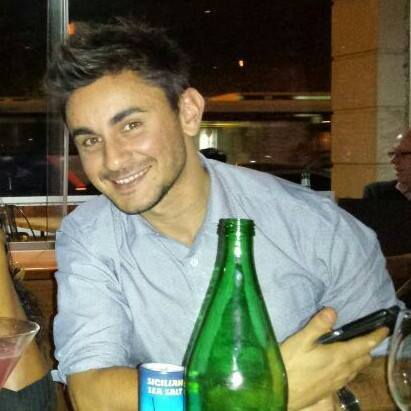

Benj studied the Bachelor of Communication Design at Swinburne’s National School of Design, Melbourne. After completing a year long internship at Hive Creative, he graduated with Honours in 2007, went to work as designer and finished artist at James Phillip Design and then onto Cornwell Design. Nowadays, he assists as Senior Designer at Balarinji, an Indigenous strategy and design agency in Sydney, New South Wales as well as running an independent design service. He has worked with a number of clients and agencies as a conceptual and production designer for visual identity, print, web, environment, packaging, merchandise, apparel and illustration.
